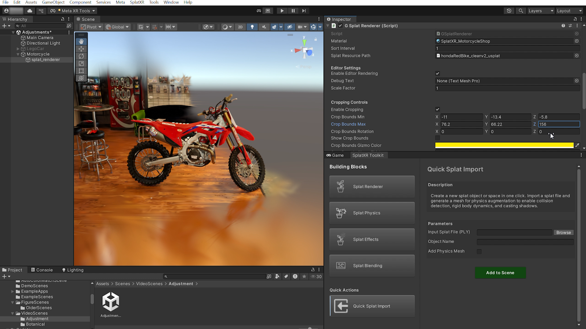
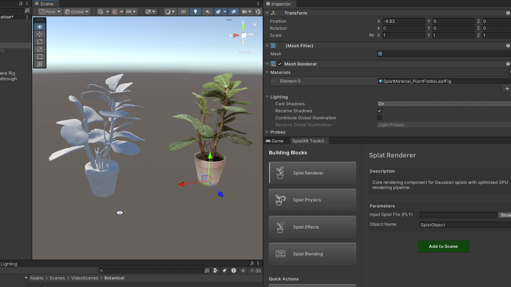
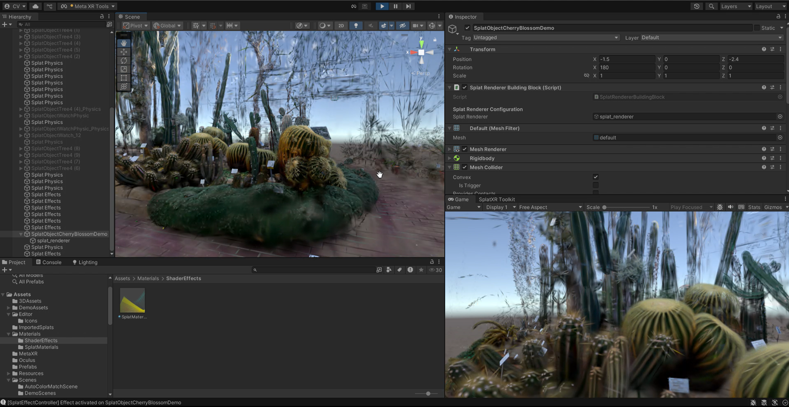
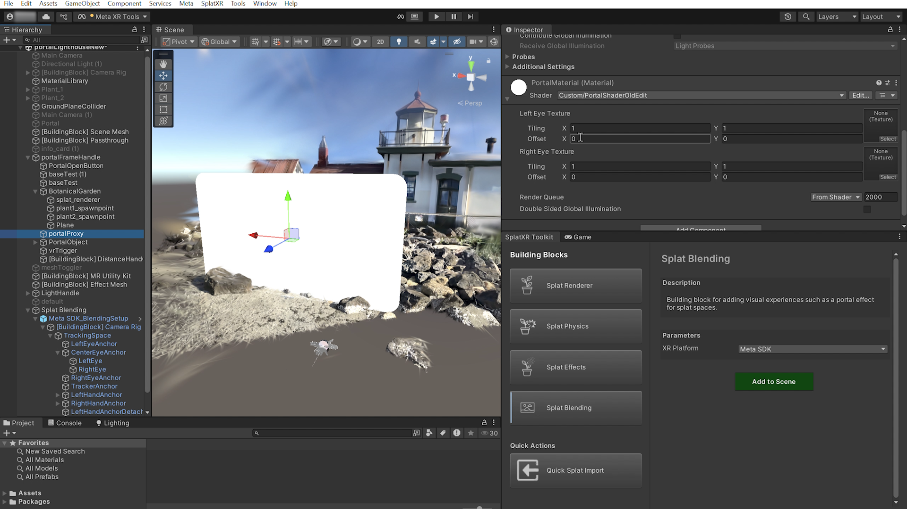

Recent advances in Gaussian splatting, 3D foundation models, and video-passthrough mixed reality offer unprecedented fidelity for capturing and blending physical and virtual worlds. However, established XR methods rely on polygon-based pipelines that treat physical and digital environments as separate domains, making seamless integration across recent novel representations difficult. Because 3D Gaussian Splatting (3DGS) lacks traditional 3D geometry, it impedes standard graphics techniques necessary for cross-reality interactions, such as shadows or collisions.
To translate these representations into useful interactions, we reconceptualize XR as a multi-layered reality of interacting primitives. Our system unites splats with the physical and digital world in a compositional structure that enables seamless transitions, allowing pixels and objects to move and interact across physical and digital boundaries. We implement this through SplatXR, a Unity toolkit providing building-block abstractions for 3DGS development — including a standalone renderer, splat-to-mesh reconstruction, and physics — installable directly through the Unity Package Manager.
Each building block is added from the SplatXR Building Blocks Panel and applied to splat GameObjects individually or in combination.

Core rendering component for displaying Gaussian splats with our stand-alone on-device rendering pipeline.
Read the docs →
Generates collision meshes from Gaussian splats to enable rigid body dynamics and shadow casting.
Read the docs →
Shader-based effects system for disintegration, radial reveal, and distortion on splat objects.
Read the docs →
Creates portal effects where splat spaces are viewed through virtual windows blended with reality.
Read the docs →A BibTeX citation for SplatXR's accompanying paper will be posted here once the paper is published.